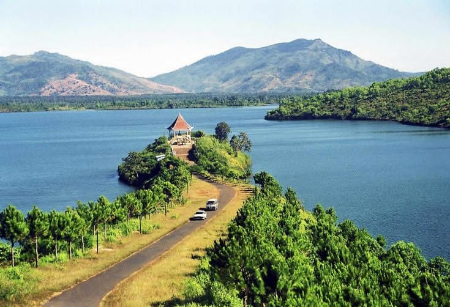
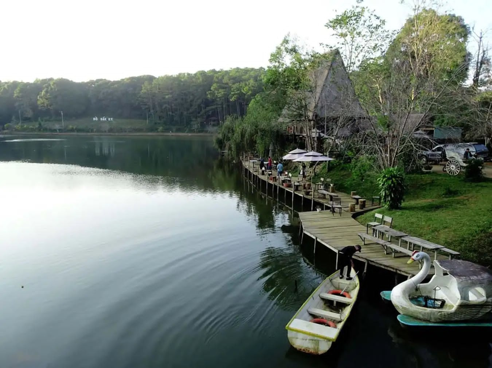
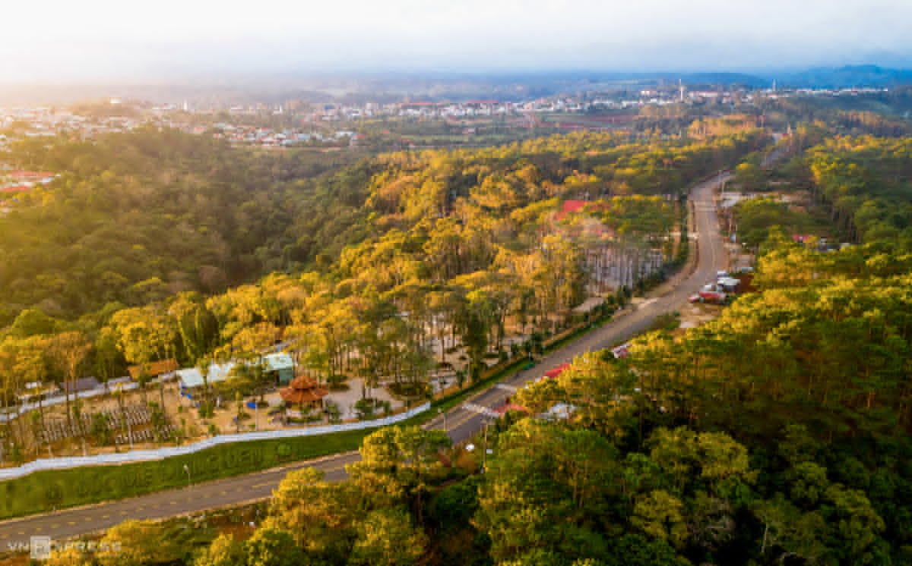

DAY 01: SAIGON – FLIGHT – PLEIKU – KONTUM (LUNCH, DINNER)
Morning:
Guests arrange their own arrival at Tan Son Nhat Airport for
flight to Pleiku..Upon arrival at Pleiku Airport, the local
guide will pick up the group for a tour of Pleiku:
•
Visit T’Nưng Lake, known as the "Eyes of Pleiku," one of the
most beautiful natural lakes in the Central Highlands. Here,
guests will be enchanted by the vast, poetic waters and the
windy skies.
Afternoon: Continue the tour with visits to:
- Minh Thanh Pagoda, an attractive site in Pleiku, built with a blend of Ly and Tran dynasty architecture.
- Unity Square, a cultural-architectural complex representing the diverse ethnic groups of the Central Highlands.
- Unity Square, a cultural-architectural complex representing the diverse ethnic groups of the Central Highlands.
- Unity Square, a cultural-architectural complex representing the diverse ethnic groups of the Central Highlands.
DAY 02: KONTUM – MANG DEN (BREAKFAST, LUNCH, DINNER)
Morning: Breakfast at the hotel.Tour Kontum with visits to:
- Wooden Church, built in 1913 by French priests, now serving as the cathedral and bishop's seat of the Kon Tum Diocese.
- Konlor Suspension Bridge, the largest steel bridge in the Central Highlands.
- Klor Communal House, a cultural symbol of the Bana people and other ethnic groups in the Central Highlands.
- Kon Tum Bishop's House, a unique blend of Western and indigenous architecture. Notable is the Traditional House, a small museum of daily life artifacts, farming tools, and cultural objects of local ethnic groups, all meticulously carved in wood.
Afternoon:
- Depart for Mang Den, a place with a cool climate year-round, often compared to Da Lat of the Central Highlands. Visit Pine Forest, Our Lady of Mang Den Statue, and Dak Ke Lake.
- Dinner at a local restaurant.
- Overnight in Mang Den.

DAY 03: MANG DEN – PLEIKU – FLIGHT – SAIGON (BREAKFAST, LUNCH)
Morning: Breakfast at the hotel.Visit some famous sites in Mang Den:
- Pa Sy Waterfall: Standing about 45 meters high, the waterfall cascades down like a long-haired fairy amidst the Mang Den mountains, adding natural and mystical beauty to the area.
- Scenic view of Khanh Lam Pagoda, a spiritual tourism spot in Mang Den.
Afternoon: The bus and guide will take the group to Pleiku Airport for flight back to Saigon.
